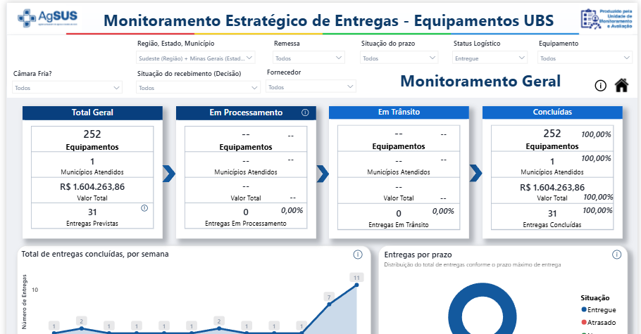
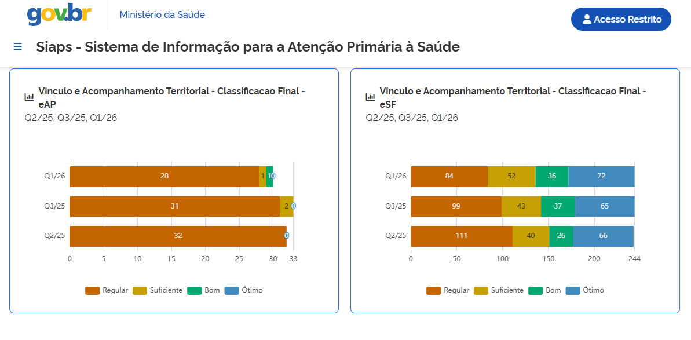

Painéis Públicos

Painel dos Credenciamentos da APS
PúblicoDisponibiliza informações sobre prazos de credenciamento, com o objetivo de orientar os municípios e apoiar a implantação oportuna.
Abrir →
Painel Mais Médicos
PúblicoFerramenta interativa e transparente do Ministério da Saúde voltada para o monitoramento e a gestão do Programa Mais Médicos.
Abrir →Painéis Internos
Financiamento

Painel Panorama APS
InternoApresenta um retrato abrangente da situação do município, com informações estratégicas sobre estrutura, indicadores e financiamento da APS.
Abrir →
APS em Números
InternoPainel com indicadores consolidados da Atenção Primária à Saúde para apoio à gestão e à tomada de decisão.
Abrir →
Notas Técnicas
InternoReúne dados detalhados e organizados para subsidiar respostas rápidas, consistentes e tecnicamente qualificadas às demandas de informação.
Abrir →Censo Nacional das UBS

Censo Nacional das UBS
InternoResultados do Censo Nacional das UBS, com informações que subsidiam análises, debates internos e reflexões sobre a qualificação da gestão.
Abrir →
Censo das UBS — Fluvial
InternoInformações específicas sobre as UBS Fluviais, permitindo análises direcionadas às singularidades da atenção à saúde em contextos fluviais.
Abrir →Combo de Equipamentos para UBS

Distribuição dos Combos de Equipamentos para UBS
InternoDistribuição dos equipamentos por município, ampliando a transparência da ação e apoiando o acompanhamento da entrega dos combos para UBS.
Abrir →
Painel de Monitoramento de Entregas dos Combos AgSUS
InternoDistribuição dos equipamentos por município, ampliando a transparência da ação e apoiando o acompanhamento da entrega dos combos para UBS.
Abrir →Sistemas e Links Úteis

e-Gestor APS
PúblicoSistema oficial de gestão da Atenção Primária à Saúde do Ministério da Saúde.
Abrir →
InvestSUS Painéis
PúblicoEvolução mais recente dos municípios nos últimos 12 meses, com dados sobre equipes, cobertura, suspensões e financiamento da APS.
Abrir →
SIAPS
PúblicoO SIAPS (Sistema de Informação para a Atenção Primária à Saúde) é a plataforma oficial do Ministério da Saúde para monitoramento e gestão da Atenção Primária no SUS.
Abrir →Nenhum painel encontrado para esta busca.